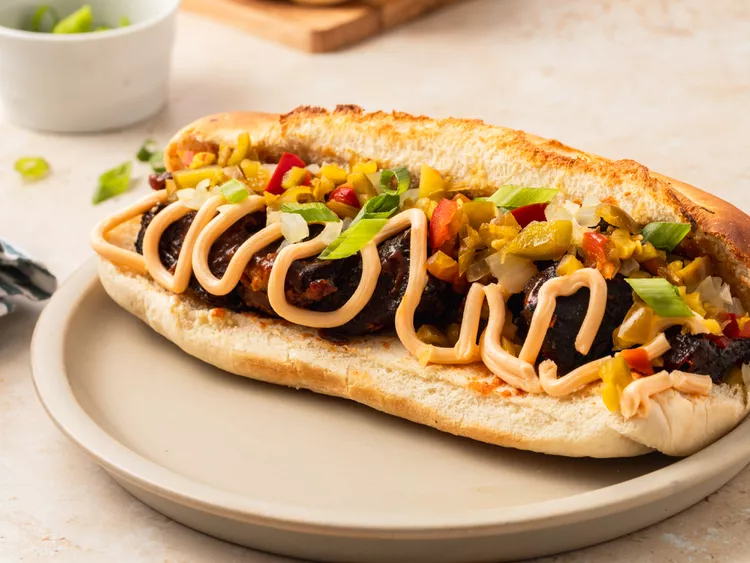

Kansas City Style "Burnt Ends"

How to make Kansas city
A twist on a Philly Cheesesteak featuring Kansas City style "burnt ends" barbecue and traditional cheesesteak toppings like sauteed onions, pickled peppers, and cheese whiz.
Ingredients
- 3 pounds beef
- 3 tablepoons barbecue dry rub
- 1/2 cup kansas city style BBQ
- 4 sandwich or hoagie rolls
- 2 tablespoons sliced green onions
How to make Kansas City Style
- Grather all ingredients
- Let rest for one hour
- preheat the oven to 450 degrees F
- Roast in the preheated oven until the "burnt ends"
- Eat and enjoy